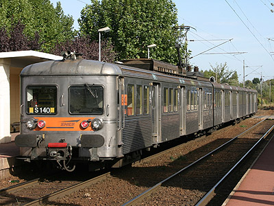

Ferrovia -12 Mars 2013 - Mise à jour 18 Mai 2017
Z 6006/6009 - 6100
Les Z 6100 sont des éléments automoteurs tricaisses fonctionnant en courant 25 kV alternatif 50 Hz, construits en acier inoxydable selon le procédé de soudure Budd. Une motrice à un seul bogie moteur et une voiture pilote encadrent une remorque. Quatre engins de présérie numérotés Z 6006 à 6009 ont été construits fin 1960-61. Les caisses des remorques sont semblables aux RIB-RIO (les premières rames RIB 60 étaient prévues pour être accouplées à une automotrice Z 6100, ce qui ne fut pas réalisé). Trois plateformes d'accès encadrent des sections de trois travées de sièges.
Les 85 rames de série ont été mises en service entre 1965 et 1971.
Elles ont servi en banlieue parisienne sur le réseau Nord et les derniers éléments ont quitté le service en décembre 2012, remplacés par des Z 50000. Quinze éléments ont été revendus en Roumanie où ils effectuent une seconde carrière.
Début 2013, il ne restait à l'inventaire que les éléments 6180, 6181 préservées ainsi que la 6150.
Les Chemins de Fer Luxembourgeois possédaient des rames similaires numérotées Z 250 dont cinq éléments ont aussi rejoint la Roumanie.
Quelques données techniques
Constructeurs : Carel et Fouché, CEM, Alsthom-SW
Tension d'alimentation : monophasé 25 kV 50 Hz
Motorisation : 1 moteur CEM GRLM 792A, à courant continu 850 V, autoventilé de 615 kW dans la motrice.
Puissance à régime continu : 615 kW par élément.
Pour plus d'info :
La fiche Z 6100 sur Wikipedia
L'inventaire des Z 6100 sur Trains du Sud-Ouest
Site de l'APPG Nord, qui a pour projet de préserver la Z 6180.

La Z 6140 à Valmondois (03/10/2004)
La Z 6156 à Persant Beaumont (30/10/2004)